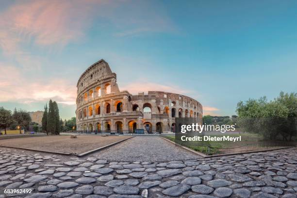
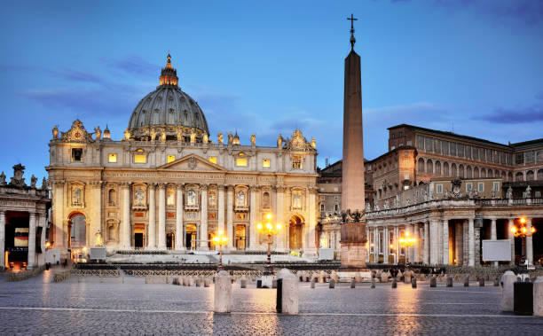

Bem-vindo!
Vamos falar brevemente dos principais pontos turísticos da Europa.
Os 5 pontos turísticos mais famosos
Tem muito mais! Mas vamos ficar por enquanto somente com 5, ok?
Europa
A Europa é um continente repleto de história, cultura e beleza natural, com alguns dos pontos turísticos mais icônicos do mundo. Aqui estão os cinco principais:
Torre Eiffel, Paris, França:
Esse monumento é o símbolo mais famoso da França e um dos mais reconhecidos mundialmente. Construída em 1889, a torre oferece vistas espetaculares de Paris e é especialmente encantadora à noite, quando iluminada.
Coliseu, Roma, Itália:
Uma das construções mais impressionantes do Império Romano, o Coliseu é o maior anfiteatro já construído e um símbolo da Roma Antiga. Milhões de turistas visitam anualmente para explorar sua arquitetura histórica e imaginar os antigos combates de gladiadores.
Sagrada Família, Barcelona, Espanha:
Esta catedral, projetada pelo arquiteto Antoni Gaudí, é uma das obras-primas da arquitetura mundial. Em construção desde 1882, seu estilo único e suas torres intrincadas tornam a Sagrada Família uma parada obrigatória na Espanha.
Big Ben e Parlamento, Londres, Inglaterra:
O Big Ben, juntamente com o Parlamento Britânico, é um dos marcos mais reconhecidos de Londres. Sua torre com o grande relógio e o palácio são símbolos da capital britânica e ícones históricos.
Museus do Vaticano, Roma, Itália:
No coração da Cidade do Vaticano, esses museus abrigam uma vasta coleção de arte, incluindo a Capela Sistina, famosa pelo teto pintado por Michelangelo. É um ponto de parada imperdível para quem visita Roma e deseja ver algumas das maiores obras da arte renascentista.
Esses locais são apenas uma pequena amostra da vasta riqueza cultural e histórica que a Europa tem a oferecer aos seus visitantes.
Fotos dos locais turísticos

Torre Eiffel
Coliseu

Sagrada Família

Big Ben
Museus do Vaticano